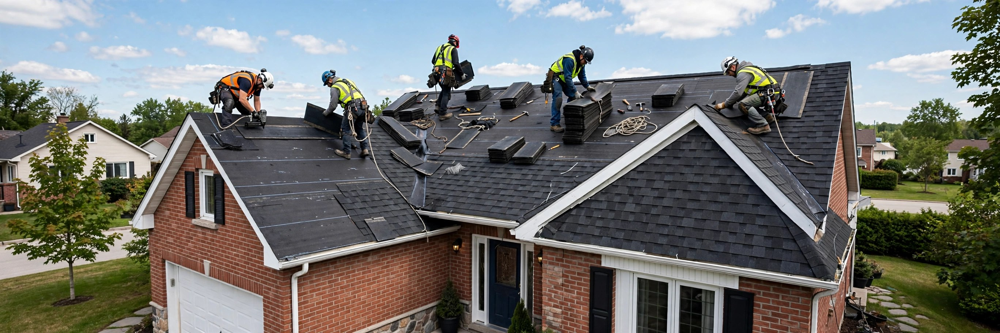
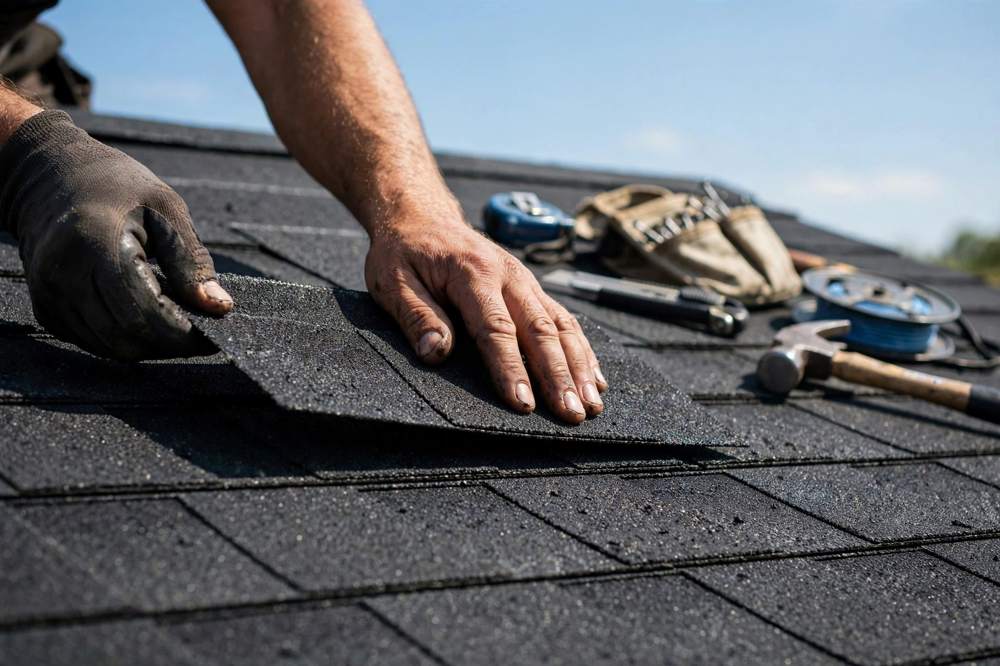
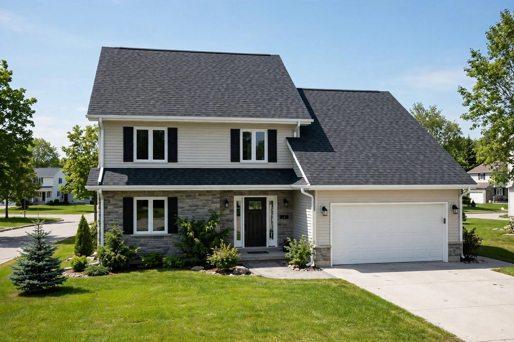
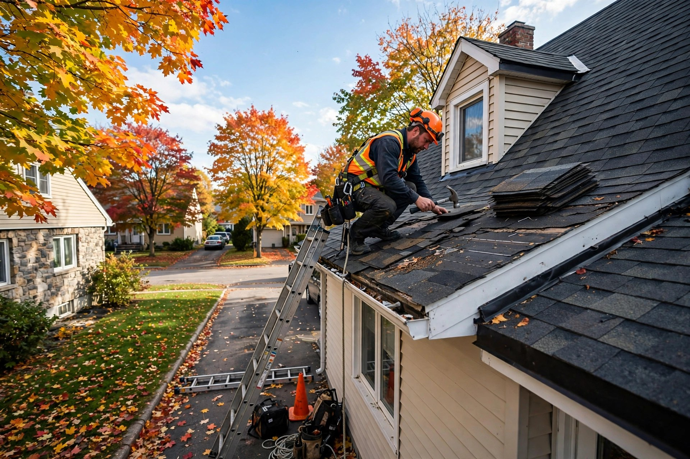

Réfection de toiture
Remplacement complet de votre toiture, réalisé selon les règles de l'art.

Terrebonne, Québec · Couvreurs — réfection et réparation de toitures
Toitures C B C Inc à Terrebonne : réfection de toiture, bardeaux d'asphalte, réparations et gouttières — résidentiel et commercial. Soumission gratuite.
Ce que nous faisons
Remplacement complet de votre toiture, réalisé selon les règles de l'art.
Installation de bardeaux d'asphalte durables, bien posés rangée par rangée.
Toitures pour maisons, condos et multilogements — du diagnostic à la finition.
Toitures pour commerces, bureaux et bâtiments industriels.
Fuites, bardeaux endommagés, solins — on répare et on entretient votre toiture.
Installation et réparation de gouttières pour protéger votre bâtiment.
Pourquoi nous choisir
On croit aux choses simples : une inspection honnête, un prix expliqué d'avance et un chantier propre. Vous savez exactement ce qui sera fait sur votre toiture — et combien ça coûte.
Nos chantiers



Contact direct
Bon à savoir
Oui — appelez-nous au (514) 594-0768 pour discuter de votre projet et obtenir une soumission gratuite.
Nous installons des bardeaux d'asphalte sur des toitures résidentielles et commerciales, en plus des réparations, de l'entretien et des gouttières.
Les deux : réparations ciblées (fuites, bardeaux endommagés) et réfection complète de toiture.
Appelez-nous au (514) 594-0768. Pour nos heures d'ouverture, appelez pour en savoir plus.
Venez nous voir